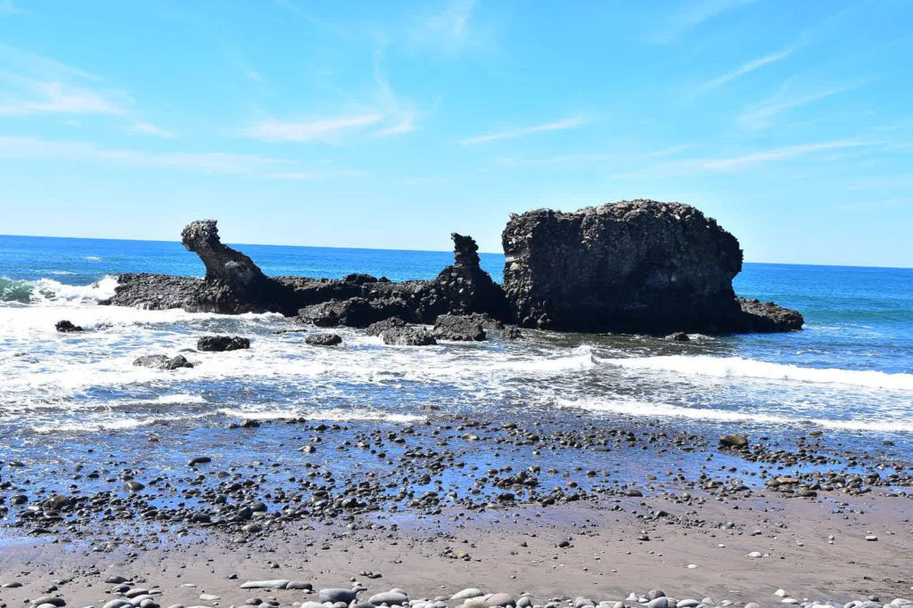
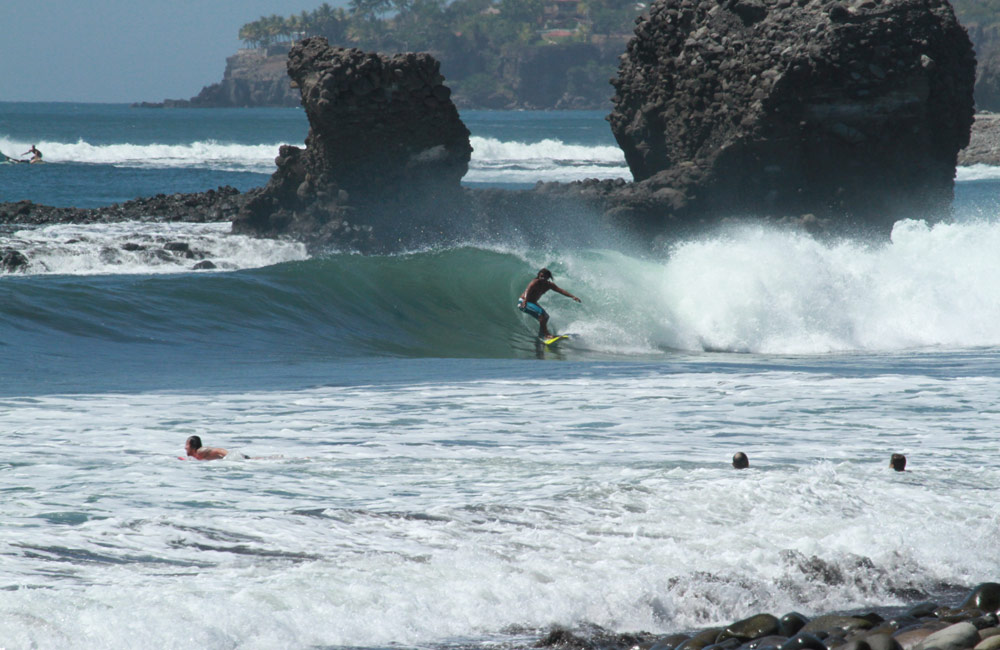
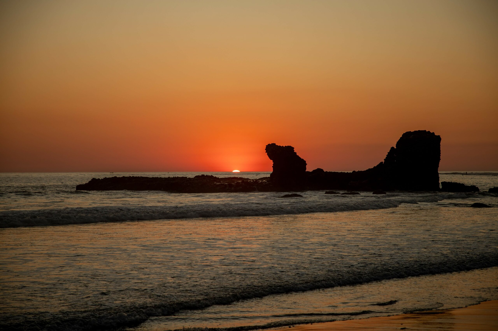

Historia
Playa El Tunco es uno de los destinos más famosos de surf en El Salvador y en toda Centroamérica.
Su nombre proviene de una gran roca con forma de cerdo ("tunco" en salvadoreño) ubicada en la orilla del mar.
Durante los últimos años, se ha convertido en un punto de encuentro para surfistas, mochileros y turistas
internacionales gracias a sus olas y ambiente bohemio.
Ubicación
La playa está situada en el departamento de La Libertad, a unos 37 km al suroeste de San Salvador.
Se encuentra en el corazón de la zona surfera del país, con fácil acceso desde la carretera litoral.
¿Por qué es famosa?
- Surf de clase mundial: Es conocida como la "capital del surf en El Salvador", con olas consistentes y rompientes como La Bocana (pico A-frame) y El Sunzal (derecha perfecta para todos los niveles). (Tripadvisor)
- Arena volcánica: Su arena negra es producto de la actividad volcánica, creando un paisaje único y atractivo. (CATA)
- Ambiente bohemio y cosmopolita: Combina un estilo relajado con una oferta vibrante de bares, restaurantes, hostales y tiendas de surf, atrayendo a una comunidad diversa de visitantes. (El Salvador Travel)
Qué hacer en El Tunco
- Surf: Disfrutar de las olas en La Bocana y El Sunzal.
- Atardeceres: Observar puestas de sol espectaculares sobre el océano Pacífico.
- Gastronomía: Probar mariscos frescos y platos locales en los restaurantes frente al mar.
- Vida nocturna: Disfrutar de bares con música en vivo y ambiente relajado.
Cómo llegar
En vehículo privado:
- Toma la Carretera Panamericana (CA-1) hacia el sur.
- Continúa hasta llegar a La Libertad.
- Desde La Libertad, sigue las señales hacia Tamanique y luego hacia El Tunco.
En transporte:
- Desde la Terminal de Occidente en San Salvador, toma un autobús hacia La Libertad.
- Desde La Libertad, puedes tomar un autobús local hacia Tamanique y luego un transporte hacia El Tunco.
Galería



⬅ Volver a Lugares